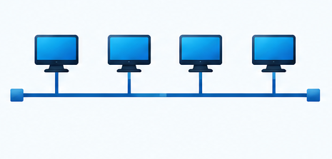
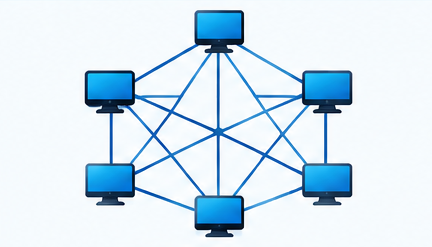
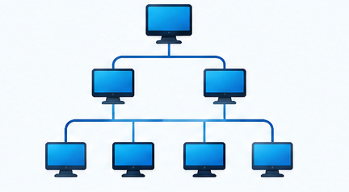
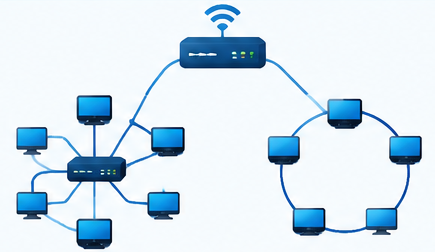

Estrela
Mais usada .Fácil de administrar e segura.

Barramento
Simples, mais pode ter falhas facilmente.
Anel
Os dados circulam em um único sentido.

Malha
Alta redundância e segurança.

Árvore
Organiza redes em vários níveis.

Híbrida
Combina redes ou mais topologias.